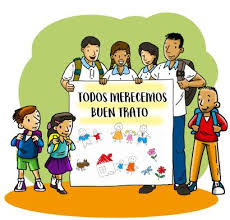

Inicio
La Ley 1674, promulgada el 15 de diciembre de 1995 en Bolivia, tiene como objetivo principal prevenir y sancionar la violencia en la familia o doméstica. Esta ley es una herramienta fundamental para proteger los derechos de las víctimas y promover la igualdad dentro del hogar.

¿Qué es la Ley 1674?
La Ley 1674 establece la política del Estado boliviano contra la violencia en la familia o doméstica, define los hechos que constituyen violencia familiar y establece sanciones para los agresores, así como medidas de prevención y protección para las víctimas.
Bienes Protegidos
La ley protege la integridad física, psicológica, moral y sexual de todos los miembros del núcleo familiar.
Principales Artículos de la Ley
Artículo 4: Violencia en la Familia
Se considera violencia familiar cualquier agresión física, psicológica o sexual cometida por el cónyuge, conviviente, ascendientes, descendientes, hermanos, u otros parientes cercanos.
Artículo 5: Violencia Doméstica
La ley también cubre las agresiones cometidas entre ex cónyuges, ex convivientes o personas que hayan procreado hijos en común, aunque no hayan convivido.
Artículo 6: Formas de Violencia
- Violencia Física: Lesiones o maltrato que afectan la integridad física de una persona.
- Violencia Psicológica: Actos que perturben emocionalmente a la víctima.
- Violencia Sexual: Conductas, amenazas o intimidaciones que afecten la integridad sexual de la víctima.
Protección y Procedimientos
La ley establece sanciones que pueden incluir multas o arrestos de hasta cuatro días. Además, prevé medidas cautelares como la prohibición temporal de la presencia del agresor en el hogar, la restitución de la víctima al hogar del que fue alejada y la entrega inmediata de sus efectos personales.
Apoyo a las Víctimas
La ley establece la obligación de las instituciones de salud y justicia de proporcionar atención integral a las víctimas de violencia. Las víctimas pueden acceder a refugios temporales y recibir asistencia psicológica y legal.
